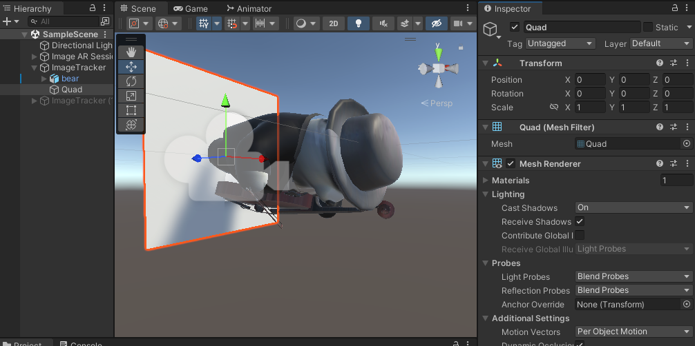

WebAR Foundation is super developer friendly. Check out this video to see how a AR web app is built in 2 minutes from a scratch Unity Project!
To position your content in editor, the easiest way is to add a "Quad" under the ImageTracker. Right click "Image Tracker" -> "3D Object" -> "Quad"
By default, the `quad` pose will be your detected target image. The width of the quad is exactly the same as the width of your target image. The height varies depending on your target image aspect ratio.
So you can add your content and position it relative to the quad. When you are done, you can disable the `Quad`.
Under the `Mind AR Image Tracking Manager` component of the `Image AR Session`, you need to specify the URL of the Mind File. You can obtain this .mind file with MindAR online compiler Now, there are two ways to specify the location of the .mind file:
1. You can put the file under `StreamingAssets` folder under `Assets`. `StreamingAssets` is a special folder for Unity. Everything inside this folder will be copied to the built app. Then you can specify the path as `StreamingAssets/targets.mind`
2. You can upload the .mind file to a public accessible URL, and simply put that down, e.g. `https://cdn.jsdelivr.net/npm/mind-ar@1.2.1/examples/image-tracking/assets/card-example/card.mind`
WebAR Foundation comes with a handy debugger that can be run in Editor, so you don't need to build it everytime you make changes. Please refer to: Image Tracking Debugger